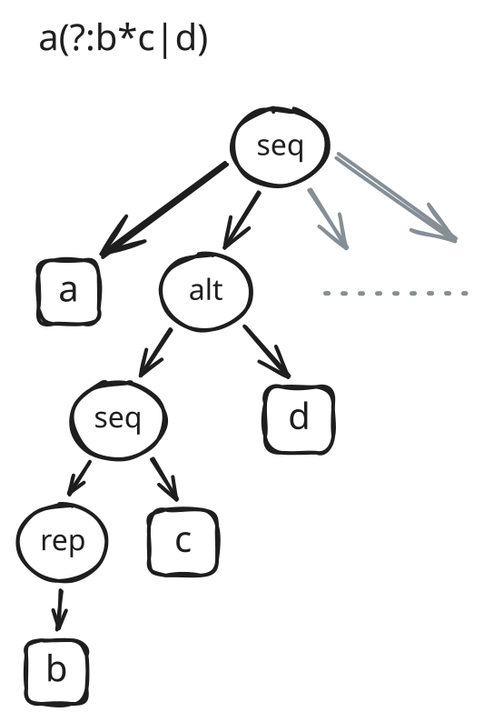
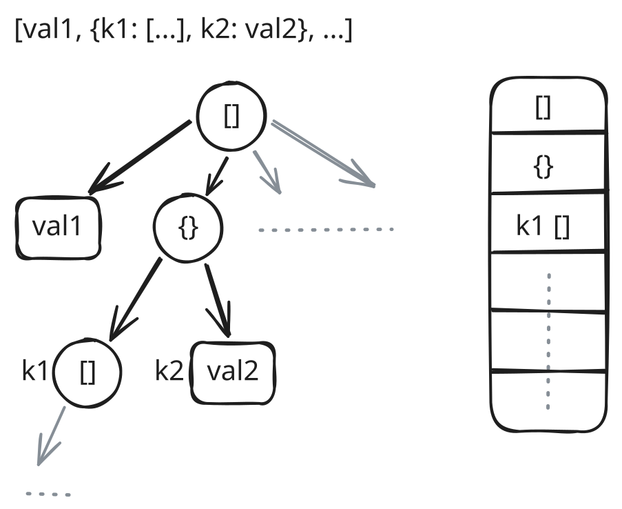
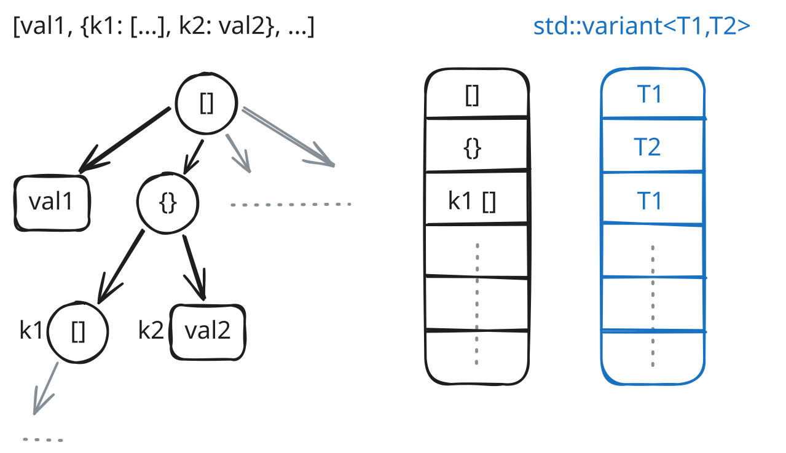
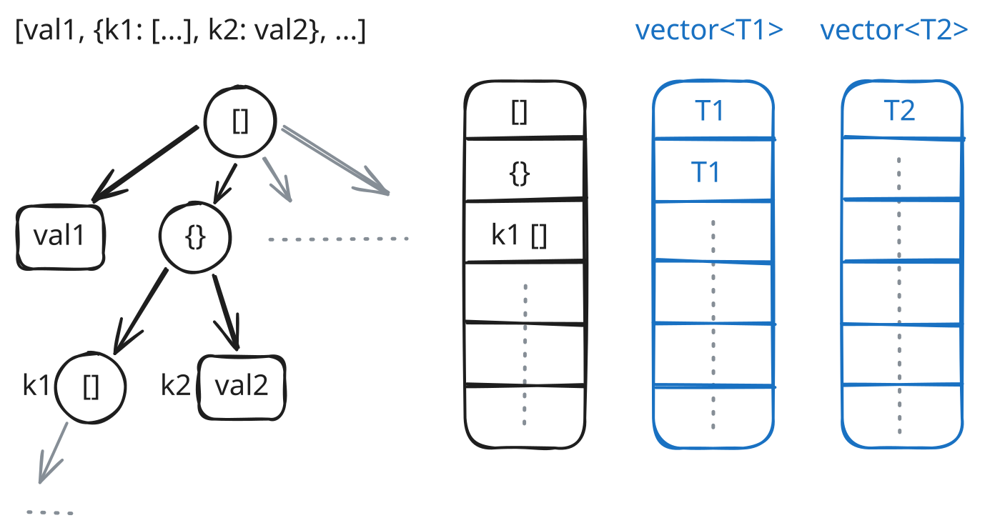
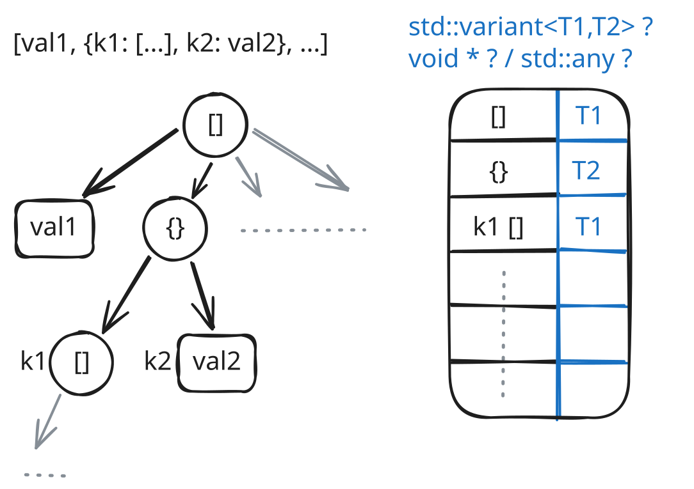
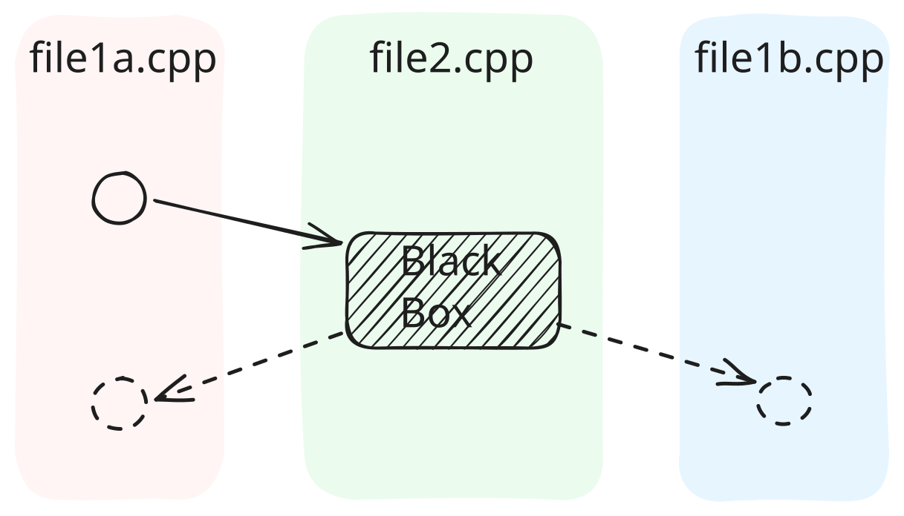
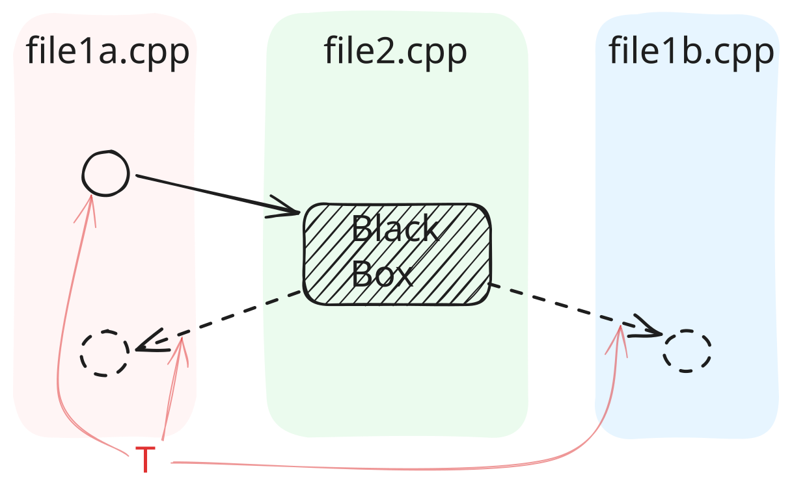
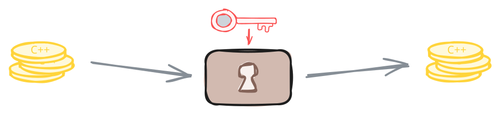
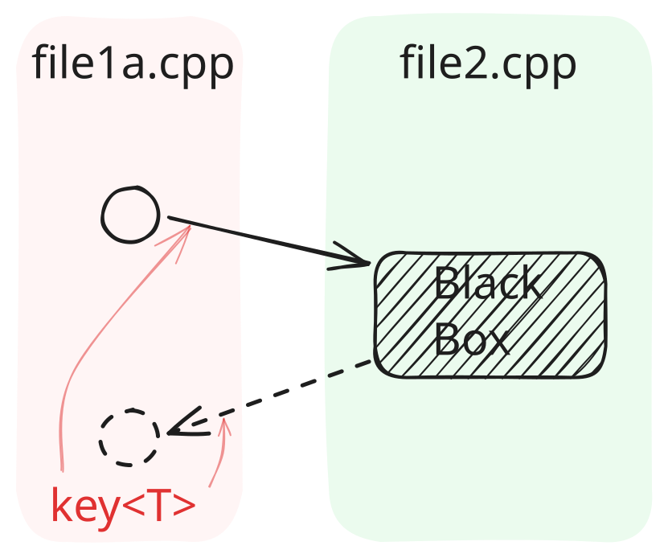
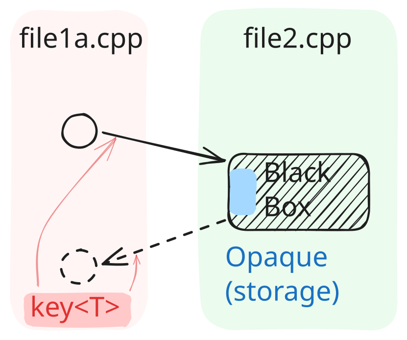

void *, dynamic_cast
std::any (“type safe void *”)
std::any revisited
Opaque, unique_anyptr, shared_anyptr
int *?
pInt32++ → addr += 4
char *!
void *
static_cast<void *>(p) / <T *>
reinterpret_cast<intptr_t>(p)
*pVoid → compiler error)
pVoid += N:
pVoid += N * sizeof(*pVoid)
error C2036: 'void *': unknown size
error: arithmetic on a pointer to void
sizeof(...) == 1)
warning: pointer of type 'void *' used in arithmetic [-Wpointer-arith]
someCallback(…, void *userData)
std::map<int, …different types…>
printf("%s: %d\n", "foo", 5)
std::vformat(std::string_view fmt, std::format_args args)
std::function<int()> fn = []() { … }
std::variant<std::monostate,Foo,int>
(a.k.a. “Tagged Union”)
template <class T> …
Object, IUnknown (outside of C++ type system), …
char *, signed/unsigned char * (and std::byte in C++17)) are safe
void * as “Base” …
//void *p = ...; // not a complete class type
// (and not polymorphic, either)
Base *p = ...; // = nullptr;
if (Foo *pf = dynamic_cast<Foo *>(p)) {
// ...
}
// or: Foo &f = dynamic_cast<Foo &>(*p); // → std::bad_castnullptr)
-fno-rtti)static_cast)
std::is_polymorphic// std::any foo = User{"Alice", 30}; // temporary object
std::any foo = std::make_any<User>("Alice", 30); // RVO (mandatory)
if (std::string *foo = std::any_cast<std::string>(&foo)) {
// ...
}
// or: std::string &bar = std::any_cast<std::string &>(foo);
// → std::bad_any_castboost::any)
std::any ap = std::unique_ptr<…>(…) (unique_ptr is move-only … → C++23)
std::any allow extracting Base for Derived?
IUnknown::QueryInterface, possibly dynamically (not in COM!)

map, vector, …

value_type of the (e.g.) std::stack<T>?








// type-distinct alias, for overloading
struct sequence_t : Opaque {
sequence_t() = default;
sequence_t(Opaque &&o) : Opaque(std::move(o)) { }
};
// ... struct alternative_t : Opaque
void AST::Sequence::visit(Visitor &v) {
sequence_t s;
v.begin(s);
for (auto &child : children) {
v.seq(s); // (e.g.)
child.visit(v);
}
v.end(s);
}sequence_t::Accessor<MySequence *> access_seq; // = Opaque::…
alternative_t::Accessor<MyAlternative *> access_alt;
void MyVisitor::begin(sequence_t &s) /*override*/ {
s.set(access_seq, new MySequence);
}
void MyVisitor::seq(sequence_t &s) /*override*/ {
// assert(s.is(access_seq));
auto node = s.get(access_seq);
…
}
void MyVisitor::end(sequence_t &s) /*override*/ {
std::unique_ptr<MySequence> node(s.release(access_seq));
…
}Opaque): Holds only an intptr_t and a pointer to a vtable (Accessor_base).
Accessor<T>): Only the correct accessor instance can get, set, release the data.
access == &_access).
Opaque uses stored Accessor-pointer for cleanup.
class Opaque {
public:
template <typename T, typename Deleter = …std::default_delete<T>…>
class Accessor;
// ctor, dtor, move, swap, get, release, set, is, reset …
private:
class Accessor_base {
virtual void destroy(intptr_t data) const = 0;
friend class Opaque;
};
intptr_t data = {};
const Accessor_base *access = {};
};template <typename T, typename Deleter>
class Opaque::Accessor<T *,Deleter> : public Opaque::Accessor_base {
public:
typedef T *value_type;
value_type operator()(intptr_t data) const {
return reinterpret_cast<value_type>(data);
}
private:
void destroy(intptr_t data) const override {
del(operator()(data));
}
Deleter del;
};
// Accessor<…, nullptr_t> (no deleter); Accessor<int, …>
template <typename Access>
typename Access::value_type Opaque::get(Access &_access) const {
if (access != &_access) {
return {};
}
return _access(data);
}
template <typename Access>
void Opaque::set(Access &_access, typename Access::value_type _data) {
if (access == &_access && _access(data) == _data) {
return; // unchanged
} else if (access) {
access->destroy(data);
}
data = reinterpret_cast<intptr_t>(_data);
access = &_access;
}Opaque dtor ran.
intptr_t (specializations: w/ vs. w/o Deleter).
std::bad_cast / nullptr / .is(…)
typeid(…), dynamic_cast, RTTI, … used/needed.
intptr_t + const Accessor_base *) at Opaque.
std::unique_ptr<Impl> with only private / forward declared struct Impl;
= default;) not in header, but in implementation.
unique_anyptr impl; (in header / public class)
unique_anyptr::Accessor<Impl> access_impl
std::shared_ptr<void> to the rescue:
template <class Y, class Deleter>
void reset(Y *p, Deleter d)
std::dynamic_pointer_cast(…) will not work (dynamic_cast under the hood!)